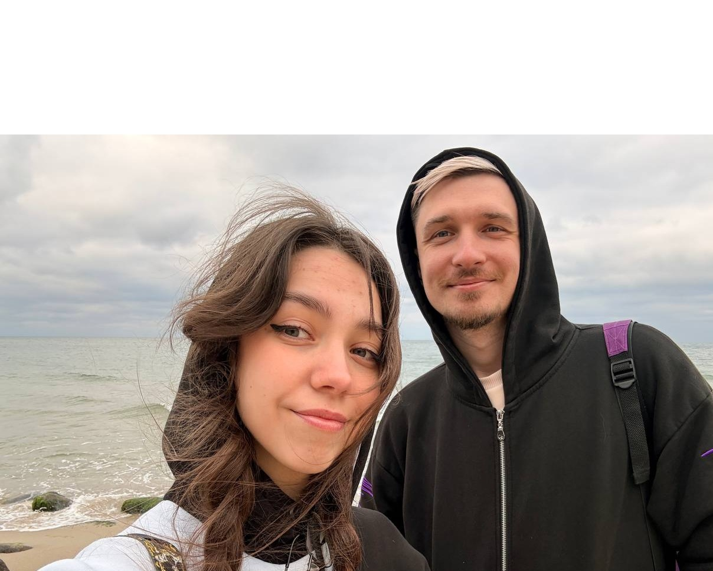

📱 Знакомство: Всё началось в 2024 году в социальных сетях. Инициативу проявил Женя — именно его сообщение стало первым шагом к их общей истории.
💬 Начало отношений: 13 сентября 2024 года они официально стали парой. С этого момента начался отсчёт их совместных дней, наполненных бесконечными переписками и звонками.
⚓ Первая встреча: Саратов стал городом их первой реальной встречи. Тот самый момент, когда экран телефона сменился живыми эмоциями и первым взглядом глаза в глаза.
📆 Красивая дата: Ровно через 9 месяцев после начала отношений, день в день, они решили связать свои судьбы официально.
💒 Церемония: Скромный и тёплый праздник в кругу самых близких. В воздухе пахло началом лета, а атмосфера была наполнена тем самым уютом, который они создавали все эти месяцы.
💞 Секрет их семьи: Несмотря на быстрый путь от первого сообщения до кольца на пальце, они сохранили ту искру первых дней и до сих пор танцуют на кухне под любимые треки.